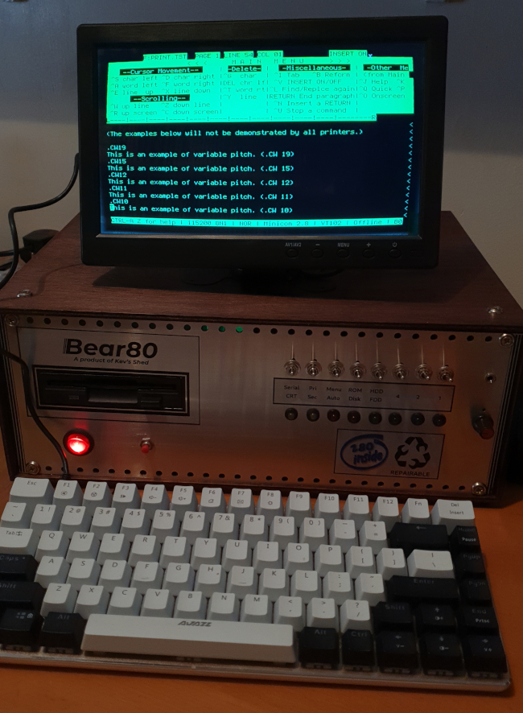
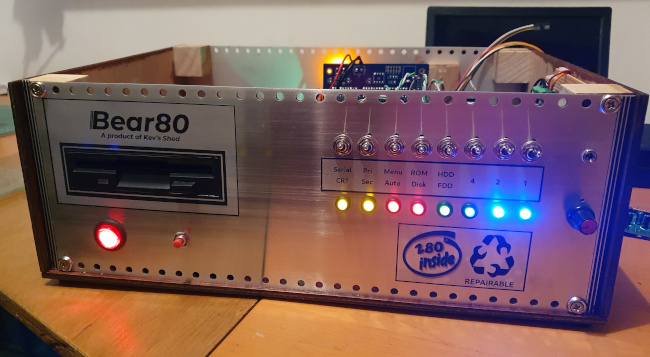
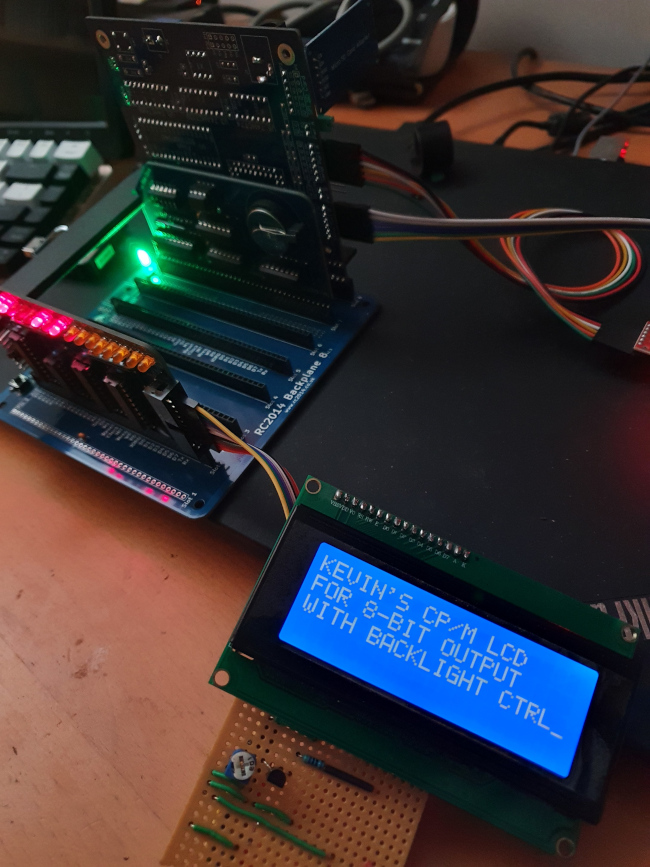
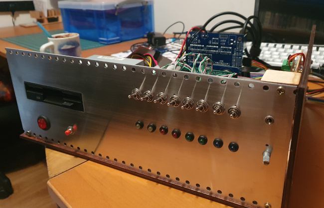

Adventures with RC2014, Z80, and CP/M
 I'm building a (more-or-less) period-appropriate CP/M system, based
on a Z80-like CPU. Why? Because.
I'm building a (more-or-less) period-appropriate CP/M system, based
on a Z80-like CPU. Why? Because.
I'm not sufficiently skilled to design and program the entire system from the ground up, so I'm expecting to use a mixture of self-design and kits. From the outset I expected a lot of work with a soldering iron and a multimeter -- on the whole, this is not a domain where pre-assembled equipment is widely available.
What I'm aiming at is something like the RML-380z or Kaypro 4 -- not ZX Spectrum. Not that I have anything against the good ol' Speccy, but it's not part of my own past. My first serious programming was with CP/M, in the early 80s, and that's the kind of system I'm trying to recreate.
Back in 1980, a fully-loaded RML-380z -- complete with 'high resolution' 320×192 graphics, would have cost the equivalent of £20,000 in today's prices. The Sinclair ZX81 could be had in kit form for £50 -- and that seemed a lot of money at the time.
I expect my computer to have authentic floppy disk drives, and talk to peripherals using RS232 serial. Ideally, I'd like to use 5.25-inch drives, but I'm not sure that any still exist, and media is hard to obtain. So I'm willing to settle for 3.5-inch disks, even though they are a bit more modern than the era I'm working in. I also want a real-time clock -- most business-oriented CP/M machines had one, even though CP/M did not require one. The machine will have rear-panel digital I/O ports and some kind of sound generator. In due course, I expect it will have a built-in keyboard and display controller but, for the time being, I'm using a serial terminal (or terminal emulator).
These various considerations mean that I needed a bus-based system. There are single-board Z80 systems that can run CP/M -- I have one of those already. Using a proper bus/backplane allows the flexibility to add components to the system over time. It also means that, should I break something -- and this is inevitable -- I might not have to trash the entire system.
There are a number of Z80 bus-based architectures, but it seemed to me that RC2014 is the most widely-used. There is not a huge market for any kind of Z80-based equipment, but RC2014 has a bit of a community around it, and it seems particularly active in the UK. The RC2014 bus uses a single-row, 40-pin layout, although there is an 'enhanced' version that has double-row connections in some places. So far, I haven't found a reason to use the 'enhanced' version.
One absolute requirement I have is that, whenever I need to do something on a computer other than the CP/M system itself, I can do it on Linux.
On this page, and the ones it links to, I document my experience building my 1985-style, reasonably authentic CP/M system. I'm doing this because there might, just possibly, be other people who want to attempt something similar, and don't know what they're letting themselves in for. I've written elsewhere about why I think it's worth preserving the technologies of the 1970's and 80's; but to do that requires there to be people with the skill, enthusiasm, and -- most of all -- support to do it.
The following sections are organized in approximate chronological order, not in order of importance or according to any particular logic. I will be adding to this page from time to time, as construction progresses. To avoid this page becoming huge, many of the topics have spun off into their own pages elsewhere on my site.
1: Base system
Many Z80 systems that are based on the RC2014 bus use separate boards for the CPU, ROM, RAM, serial ports, etc. I preferred to use a single-board solution for these core functions. Given the number of peripherals I'm planning to install, using separate boards for essential (non-peripheral) functions would have led to a bus/backplane a yard long.
This led me to the SC130 single-board designed by Stephen Cousins. He sells kits of parts for these on Tindie, but I was fortunate enough to be able to get a ready-built unit on eBay.
The SC130 is based on the Z180 CPU, rather than the original Z80. The Z180 is software-compatible with the Z80, and will run CP/M just the same. However, the Z180 has a number of built-in peripherals, including two serial ports. So this simplifies the construction, and makes the whole thing more compact. The Z180 was introduced in the mid-1980s, so it's period-appropriate. However, it can run at 18MHz, which makes it quite a bit faster than a true Z80 system. I won't be using any of the features of the Z180 that aren't binary-compatible with the original Z80.
Rather irritatingly, I discovered that one of the two serial ports on the Z180 does not support hardware flow control. So I might need to add a proper serial port in the end, after all (more on this later).
Although CP/M was (or should have been) hardware-independent, all CP/M systems had a hardware specific BIOS that carried out the lowest-level hardware operations. The SC130 is supplied with Wayne Warthen's RomWBW, which provides the BIOS and also its own implementation of CP/M and utilities. RomWBW also provides other software that is period-appropriate for Z80, like a boot-to-BASIC mode. As a result, RomWBW is much larger than a regular CP/M BIOS would have been. But that's OK -- the CP/M implementation itself is entirely authentic, and few CP/M programs will interact directly with the RomWBW BIOS (although some of mine do).
For the bus/backplane I'm using a 'Backplane 8' from Z80Kits. The kit is supplied with 8 female sockets for mounting the boards, but the SC130 has a female bus socket. I suspect that this socket is for plugging a peripheral board into, rather than plugging the SC130 into a backplane. So, to mount the SC130 vertically on the Backplane 8, I had to replace one of the female sockets in the backplane with a male. When I did mount the SC130 in the backplane, I found that it was quite top-heavy, and didn't sit nicely. It turns out that there are published designs for little spring clips that clamp a bunch of RC2014 boards together, to increase stability. I found, however, that I could just contrive a mounting system from Foamex board that works just as well, and will also work when the whole system is installed in a case.
2: Exchanging files with the Linux system
Being able to boot CP/M is all very well, but there needs to be a way to install software, and to share data with other computers. I have a separate article on this subject.
3: Using the serial ports
The SC130 has two serial ports. They are broadly RS232-compatible, but use 5V TTL logic levels. These ports are compatible with FTDI-style serial-to-USB converters (available for a couple of quid on eBay) so they are easy to connect to modern systems with USB ports. To connect to authentic hardware, I'll need voltage-level converters.
One thing I want to be able to do with my CP/M system is to log into other computers using the serial port. I would also like to be able to use an authentic 1980s serial printer. Both these activity are hampered by the lack of hardware flow control on the SC130's second serial port. This isn't the fault of the SC130 or the BIOS -- the support is missing from the Z180 CPU itself. So at some point in the future I will probably need to build and install an additional serial port board.
For some applications, software flow control is sufficient: some serial printers do support this kind of flow control. I have written a simple utility for RomWBW that sends text files to a named serial port, respecting flow control. No such utility exists for CP/M in general, because CP/M had no API for arbitrary serial ports.
I've documented my adventures designing and building a 5V-to-RS232 level converter for RC2014 in a separate article.
4: Real-time clock
Having got the basic system working and running CP/M software, my next step was to build and test a real-time clock board. Various designs are available, but they all seem to use the same basic hardware. I've described my experience building and programming the RTC module, in a separate article.
5: Digital I/O
The final unit will have an elementary GPIO port for connecting arbitrary hardware, like the Raspberry Pi has (and like the BBC Micro had, back in the day). My plan is to bring this out to a header connector on the rear panel.
There seem to be two basic classes of digital I/O board for the RC2014 bus: those that offer simple, fixed input/output assignments, and those that are flexible, possibly with interrupt support. The latter are typically based on the 8255 I/O controller. This part is getting hard to find, and can be pricey. A simple, fixed I/O unit can be made from a handful of 74-series decoders and latches, which remain widely available and cheap. A good example of this latter design is the SC129, which even has some handy LEDs so you can tell whether it's working. My main worry about the 8255-based designs, though, is not the cost or the availability -- rather, I'm not entirely sure that they will work at the full speed of the Z180.
This picture below shows the SC129 driving a LCD module. Software and hardware design for this application are in my GitHub repository.
6: Modifying and rebuilding RomWBW
The RomWBW BIOS has support for many I/O devices, some of which is enabled by default, and some which is not. When support is enabled, the BIOS tries to auto-detect hardware that it knows about, even if I know it will never be installed. This makes the boot process a bit slower than it needs to be. At the same time, some hardware is not enabled in the BIOS that I know will be installed.
Although I never modified and rebuilt the BIOS in an original CP/M machine -- and don't even know if it would generally have been possible -- rebuilding RomWBW seems fairly routine. Doing this also allows me to control what utilities are available on the default 'B' drive, which is in ROM.
The process is relative straightforward, but complicated enough to need this separate article.
7: Enable status LEDs
I recently discovered that RomWBW supports boot-status and disk activity LEDs. These are output to the data lines of a Z80 port (conventionally port zero). So if you have a digital I/O board (e.g., SC129) then eight LEDs can be connected to show boot progress (actually, the SC129 has eight LEDs built in, but the wiring would need to be extended to the front panel, when there is one). After boot, these LEDs flash when there is disk activity,
The default configuration for the SC130 motherboard does not enable these LEDs, so I had to modify and re-flash the EEPROM. The required additional settings are
DIAGENABLE .SET TRUE DIAGPORT .SET $00
8: Install a sound board
What 80s-style computer would be complete without 80s-style 8-bit chiptunes? In a separate article I describe my experiences constructing and programming a YM2149 sound board.
9: Install a floppy disk drive
Another ubiquitous feature of serious microcomputers of the early 80s is one or more floppy disk drives. I have a separate article on adding a floppy disk controller to my RC2014 Z80 system.
10: Case and front panel
At some point, my system will need a proper case and front panel. I've decided to include the status LEDs and boot control switches on the front panel; I'll also need a volume control and headphone jack for the sound board.
And, of course, power and restart switches and, most difficult of all, a cut-out for the floppy disk drive.
My first thought was to use a real mid-80s PC case. This would have cut-outs for floppy drives, and also a power supply that can supply the 12V and 5V I need. Unfortunately, cases of this vintage are now shockingly expensive, even in poor second-hand condition. It's annoying, because I imagine that millions of them ended up in the crusher.
An instrument case is another possibility. In the end I was not able to find one large enough for everything I wanted to accommodate, and decent ones are, again, frighteningly expensive.
In the end I decided to make a case from wood, with aluminium front and rear panels. Aluminium is relatively easy to work (compared to pressed steel, anyway), and I was able to get two used panels of the right size for a few quid from eBay. These panels were somewhat scratched, but I figured I would be polishing them up to a bright finish in the end, to suit the 80s styling. But here I made my first terrible mistake.
Since I thought I would have to polish the panels anyway, I decided to make all the cut-outs first, so that I could remove any scratches and defects I made during the cutting during the finishing process. The standard way to polish an aluminium panel is to abrade its surface in one direction, using increasingly fine glasspaper. I should point out that this takes a long, long time, and generates a huge amount of fine, irritating dust. That wasn't the worst problem, though.
Because I had already cut many holes in the panel, polishing it caused tiny particles to collect in these holes, because I had the panel fastened to a flat surface. Every time I rubbed the abrasive over the holes, it picked up some of these particles, which then scored the surface as they got carried along. So, as I worked, some parts of the panel polished up to a mirror finish, while others just got more and more dull. This was extremely frustrating.
In the end, by careful choice of abrasive grade, along with regular washing of the panel, I managed to get a reasonable finish. But it took a whole day, and my shoulder muscles ached for days afterwards.
If I were doing this again, I would polish up the panels first, when they are completely flat and have no holes in them. Of course, I would have to be extremely careful about making the panel cut-outs afterwards, to avoid scratching the newly-polish surface.
Or I suppose I could have just painted the panels black -- this also would have been in keeping with the era. Anyway, this is what the front panel looks like at this stage of development.
There's still work to do, but with a front panel and a wooden base, the system can be made tidy. It looks a bit like a computer, rather than a pile of boards sprawling over my desk.
More to come in due course...